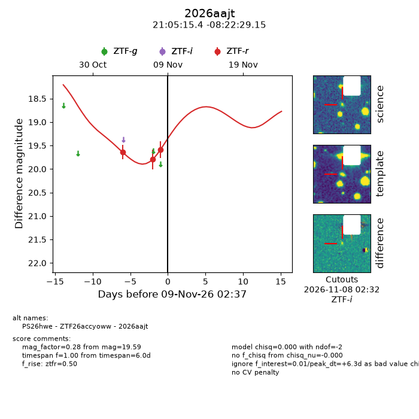
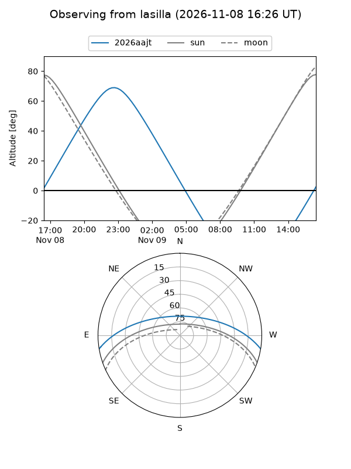
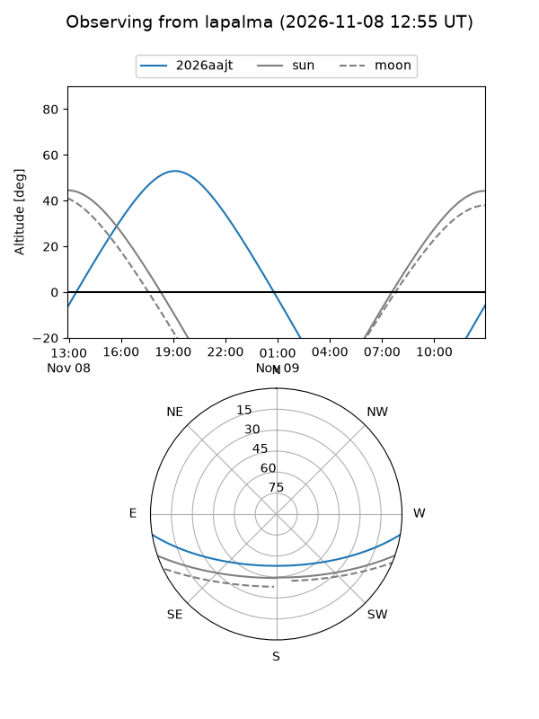
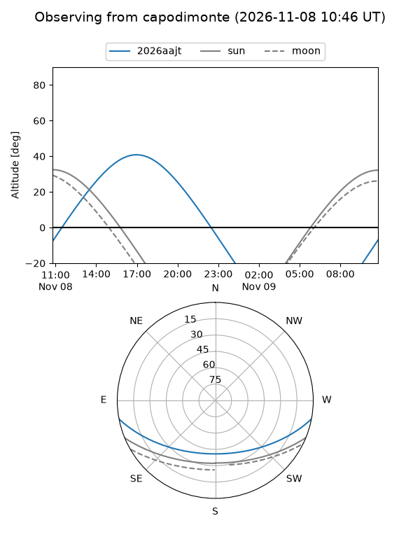
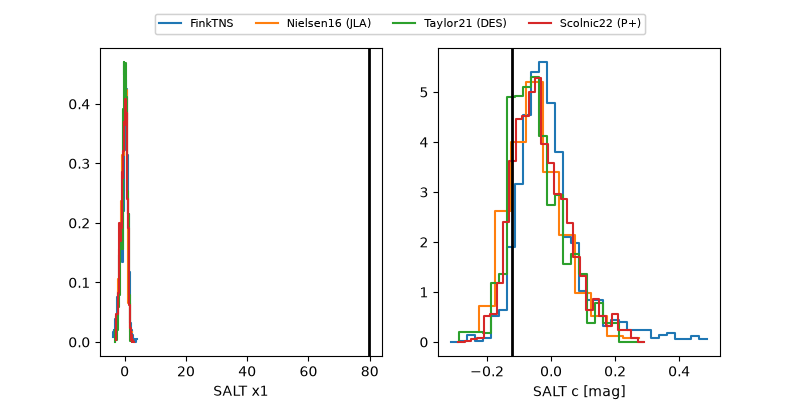

2026aajt
Target 2026aajt at 2026-11-09 02:39
Aliases and brokers:
FINK-ZTF: ztf.fink-portal.org/ZTF26accyoww
Lasair-ZTF: lasair-ztf.lsst.ac.uk/objects/ZTF26accyoww
ALeRCE-ZTF: alerce.online/object/ZTF26accyoww
YSE-PZ: ziggy.ucolick.org/yse/transient_detail/2026aajt
TNS name: wis-tns.org/object/2026aajt
Direct TNS query: direct search
alt names
ZTF26accyoww (ztf,fink_ztf)
2026aajt (tns,yse)
PS26hwe (panstarrs)
Coordinates:
equatorial (ra, dec) = 316.3141,-8.37476
equatorial (HMS+DMS) = 21:05:15.37,-08:22:29.15
galactic (l, b) = (41.1402,-33.49126)
Flags:
peak dt: +6.3
Photometry:
last ztfr=19.59
3 ztfr detections
Lightcurve

Visibility



Additional plots
